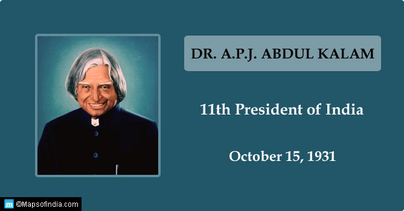

Dr A. P. J. Abdul Kalam

Abdul Kalam was an Indian aerospace scientist
Avul Pakir Jainulabdeen Abdul Kalam was an Indian aerospace
scientist who served as the 11th president of India from 2002 to 2007.
He was born and raised in Rameswaram,
Nadu and studied physics and aerospace engineering.
He was born and raised in Rameswaram, Tamil Nadu and studied physics
aerospace engineering. He spent the next four decades as a scientist
and science administrator, mainly at the Defence Research and Development
Organisation (DRDO) and Indian Space Research Organisation (ISRO) and was intimately involved
in India's civilian space programme and military missile development efforts.